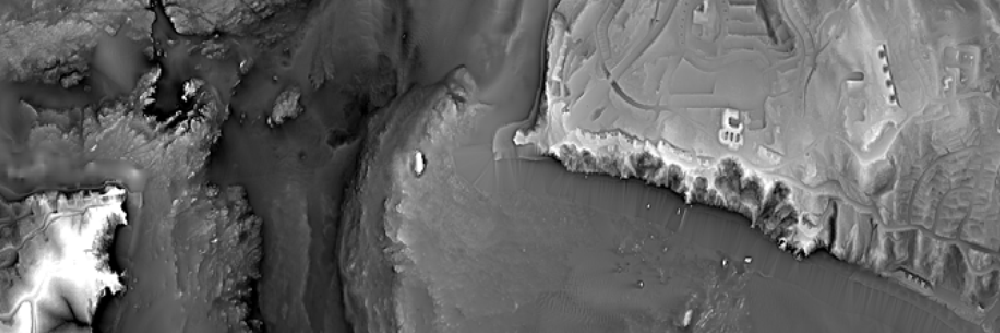
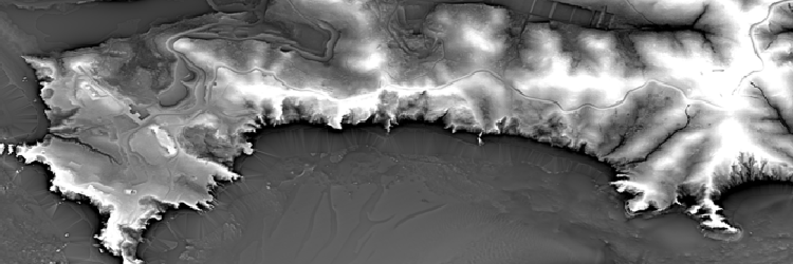
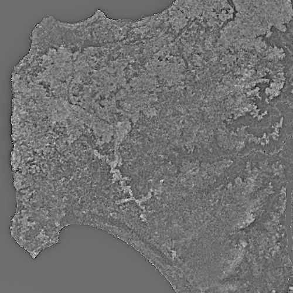
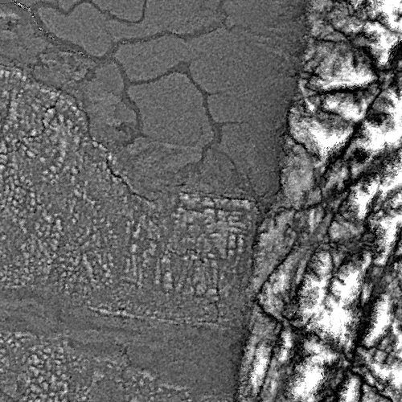
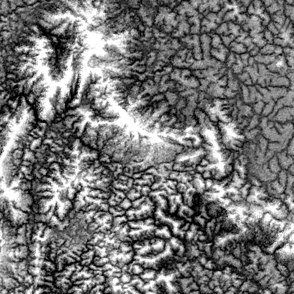

(Above: Mount Sutro and Twin Peaks, San Francisco, at 1:20,000: texshaded at α=0.8)
(Above: Mount Sutro and Twin Peaks, San Francisco, at 1:20,000: texshaded at α=0.8)Texture-shaded elevation via the fractional-Laplacian operator.
(Above: Mount Sutro and Twin Peaks, San Francisco, at 1:20,000: texshaded at α=0.8)
 (Above: Golden Gate Bridge, from the Bay, at 1:20,000: texshaded at α=0.8)
 (Above: Marin County Handlands, at 1:20,000: texshaded at α=0.8)
Links:
Table of contents:
The best way to understand texture-shaded elevation is to look at some examples: we gave some at the top of this document, but also take your time at the following links to get a visual sense of world with texture shading.
In words though, texture shading is a visualization technique for digital elevation maps (DEMs) that highlights the network nature of topography, throwing ridges, canyons, and valleys into sharp relief.
(In more words: it works by applying a specific sharpening filter, called a fractional-Laplacian operator, to the elevation. The filter is applied in the frequency domain.)
This repository contains an open-source public-domain Python/Numpy software library to apply the texture shading algorithm on extremely large datasets that are far too large to fit in your computer's memory.
This is useful because a straightforward implementation of the texture-shading technique requires loading the entire elevation map into memory. For large datasets—like the ASTER Global DEM, which comes in at roughly 250 GB compressed—you either have to find a computer with a lot of memory, or you have to modify the technique slightly.
So in this repository, we apply a well-known trick from signal processing theory, called the overlap-save method, to avoid loading the entire terrain into memory üòÅ. However, this trick requires us to approximate the exact texture-shading "filter" slightly üòï. In exchange for being able to process huge elevation datasets, you need to accept approximated texture-shaded images‚Äîvisually you can barely tell the difference üéÜ!
(Don't worry, you can use this repo to texture-shade smaller elevation maps as well üòä!)
To install this library:
$ python -m pip install texshadeTo use it, in your Python code:
There are just three functions in the API. This can serve as a quick introduction to the algorithm itself.
texshadeFFTAPI:
This applies the texture shading algorithm to an array x of elevation data, with a shading detail factor alpha >= 0.
This is the exact, high-memory, classic implementation of texture shading. It computes a real-only FFT of the entire array x. Use this if your x fits comfortably in RAM: this function is fast and exact.
alpha is the shading detail factor, i.e., the power of the fractional-Laplacian operator. alpha=0 means no detail (output is the same as the input). alpha=2.0 is the full (non-fractional) Laplacian operator and is probably too high. alpha <= 1.0 seem aesthetically pleasing.
texshadeSpatialAPI:
def texshadeSpatial(
x: np.ndarray,
alpha: Optional[float] = None,
nDiameter: Optional[int] = None,
filter: Optional[np.ndarray] = None,
# ols kwargs
size=None,
nfft=None,
out=None,
**kwargs
) -> np.ndarrayThis is the low-memory approximation of the texture shading algorithm. It convolves the input array with an FIR (finite impulse response) approximation of the true fractional-Laplacian operator using an FFT-accelerated overlap-save algorithm ("fast-convolution"). This allows x to be arbitrarily large: data can be stored on disk and loaded as a memory-mapped array.
Instead of computing the entire FFT of the input array x (like texshade.texshadeFFT), this function can either
nDiameter per side and for shading detail factor alpha (for tips on picking alpha, see notes for texshade.texshadeFFT above), orfilter you've already generated via texshade.makeFilter (see below).Background on nDiameter In the exact fractional-Laplacian operator implemented in texshade.texshadeFFT (above), each pixel in the output theoretically gets a contribution from each pixel of the input. This function, in contrast, limits contributions to a given output pixel to just the nDiameter by nDiameter sub-array that surrounds it in the original.
Tips on picking nDiameter There's a risk to making nDiameter too small or too large:
nDiameter by nDiameter pixel sub-array of terrain x has a rich set of physical features.The three remaining keyword arguments are for the overlap-save ("ols") algorithm that does the fast-convolution and are important to understand when you need to texture-shade huge datasets. They are fully documented in the docstring, so I won't duplicate that here.
This function will also pass any other keyword arguments kwargs to the ols overlap-save module. This lets you override the Scipy FFT with, for example, multi-threaded PyFFTW, etc.
makeFilterAPI:
This function returns the filter (i.e., the approximation to the fractional-Laplacian operator) to use with texshade.texshadeSpatial). The output array has dimensions shape and type dtype. If shape has just one element, the output array will be square. If your terrain is a Numpy array of type float32, pass in dtype=numpy.float32, otherwise it defaults to 64-bit floats.
The shading factor alpha is the same as texshade.texshadeFFT above.
That should be all you need to start using this library! The rest of this document is a tutorial that describes all the other pieces you are likely to need to use this library effectively.
Let's work through an the entire pipeline that texture shading is a part of:
There are a few useful scripts in the ./tutorial directory of this repo. Download them individually, or just clone this repo (install Git, run git clone https://github.com/fasiha/texshade-py.git; cd texshade-py/tutorial).
This section is about installing GDAL, imagemagick, and two Python libraries, Pillow and texshade itself. Skip to the data step if you have all those installed.
Because setting up GDAL is often a tricky and laborious process, there are many tutorials online—I'd like to share my approach because it's easy, reliable, cross-platform.
Install miniconda, a small command-line application that lets you create conda-based virtual environments, and download/install dependencies.
Conda is awesome. I avoided it for years because it seemed corporate (Enthought), and because I thought I didn't need another Python environment manager beyond venv? , But conda-forge is a fully volunteer-run organization that packages all kinds of dependencies for all feasible operating systems and CPU architectures. So it's perfect for us to install the C++ and Python GDAL tools.
# create environment
conda create -n texshade-tutorial
# "enter" the environment
conda activate texshade-tutorial
# install binary dependencies
conda install -c conda-forge gdal Pillow imagemagick
# install this repo
pip install texshadeWe ask conda to install gdal, which is a Swiss Army chainsaw for geographic data process. Pillow and imagemagick are used by the tutorial to create and manipulate images. Pip is used to install texshade (this library) from PyPI since I haven't created a conda-forge recipe for it.
Download some data! I've downloaded three tiles from the SRTM DEM (from https://dwtkns.com/srtm30m/) on the African coastline near 0° N and 0° W, because I've been loving John K Thornton's Africa and Africans in the Making of the Atlantic World, 1400-1800:
Unzip all three—a useful shell script for macOS/Linux/WSL:
and then combine them into a single image, merged.tif:
Running gdalinfo merged.tif produces the following output:
Driver: GTiff/GeoTIFF
Files: merged.tif
Size is 10801, 3601
...
Origin = (8.999861111111111,1.000138888888889)
Pixel Size = (0.000277777777778,-0.000277777777778)
...
Corner Coordinates:
Upper Left ( 8.9998611, 1.0001389) ( 8d59'59.50"E, 1d 0' 0.50"N)
Lower Left ( 8.9998611, -0.0001389) ( 8d59'59.50"E, 0d 0' 0.50"S)
Upper Right ( 12.0001389, 1.0001389) ( 12d 0' 0.50"E, 1d 0' 0.50"N)
Lower Right ( 12.0001389, -0.0001389) ( 12d 0' 0.50"E, 0d 0' 0.50"S)
Center ( 10.5000000, 0.5000000) ( 10d30' 0.00"E, 0d30' 0.00"N)
Band 1 Block=10801x1 Type=Int16, ColorInterp=Gray
NoData Value=-32768
Unit Type: mThis looks good: we have a 10801 by 3601 image whose center is close to the equator, as expected.
To confine GDAL and geo-registered images to the edges of my workflow, I want to convert this elevation data to a simple Numpy array. convert.py does that, so run it:
python convert.pyThis creates a new file, merged.tif.npy.
It's time to apply the texture-shading algorithm—what you've all come for! demo.py exercises the texshade library published by this repo. I've picked α of 0.8, and it runs the memory-intensive texshadeFFT implementation.
python demo.pyThis creates a new file, merged.tif.npy.tex.npy (note the "tex" in the filename).
I always clamp the texture-shaded array to between, say, 1-percentile and 99-percentile, to improve the base contrast. (Apps, like my Texture-Shaded Globe, let you add even more contrast.)
Then I quantize the floating-point data to an 8-bit PNG, as well as a georegistererd TIF. The PNG is great for the web while the GeoTIFF is great for QGIS, etc.
This is all done in postprocess.py. Run it
python postprocess.pyto create
scaled.tif, the texture-shaded GeoTIFF,scaled.png , the texture-shaded 8-bit PNG, andorig.png, the original DEM data as an 8-bit PNG, for comparison.The PNG generated in the above image is way too big for the web. This next Bash command uses imagemagick's convert (installed by conda above) to resize the output images so I can include them in this repo.
for i in orig.png scaled.png; do
convert -filter Mitchell -sampling-factor 1x1 -quality 90 -resize 2048 $i $i.small.png;
done

When we called texshadeFFT above, Python computed the two-dimensional FFT of the entire elevation array. This means that your computer had enough memory to store
Even if we didn't store #3 above (e.g., if we used Numba to modify #2 in-place), since FFTW cannot do in-place Fourier transforms, we're still left with needing 3× the entire elevation array in free memory.
Imagine that we wanted to texture-shade our data on a tiny computer with a huge disk. We can load it as a memory-mapped file, so Numpy only reads the chunks of data it needs from disk to RAM, and run texshadeSpatial. This is demonstrated in memmap.py. Run it:
python memmap.pyto produce a file, mmap.png.
I used a 500 by 500 spatial filter: each pixle in the output image received contributions from the 500 by 500 pixel grid around it in the input, and no contribution from pixels outside that neighborhood.
The keyword argument size=[1500, 2000] was provided to texshadeSpatial. As explained in the docstring, this means that the overlap-save algorithm will take two-dimensional FFTs of roughly size + nDiameter - 1 = [1999, 2499]. (We zeropad the input to FFT sizes with small prime factors, so each FFT will actually be 2000 by 2500.) This is much smaller than a full 2D FFT of the entire 3601 by 10801 input array.
Note that the overlap-save algorithm, while overall efficient, is going to be slower than the single-large-FFT in texshadeFFT. Furthermore, memory-mapping and disk-I/O is also going to be much slower than RAM. As is hopefully clear, you only want to use texshadeSpatial if you don't have the RAM for texshadeFFT.
Let's generate a few crops (using convert from imagemagick, installed by conda above):
for i in mmap.png scaled.png; do
convert -crop 500x500+1090+1341 $i crop1-$i;
convert -crop 500x500+3300+202 $i crop2-$i;
convert -crop 500x500+7054+1968 $i crop3-$i;
doneInspecting these, the only differences I see are due to slight differences in the contrast.






We can finally run the texture shading algorithm on enormous datasets without needing gargantuan amounts of memory!
To build the HTML, I use Pandoc and coordinate it with the Makefile, which can be invoked by running $ make.